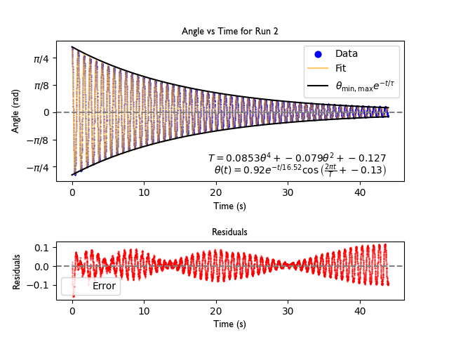
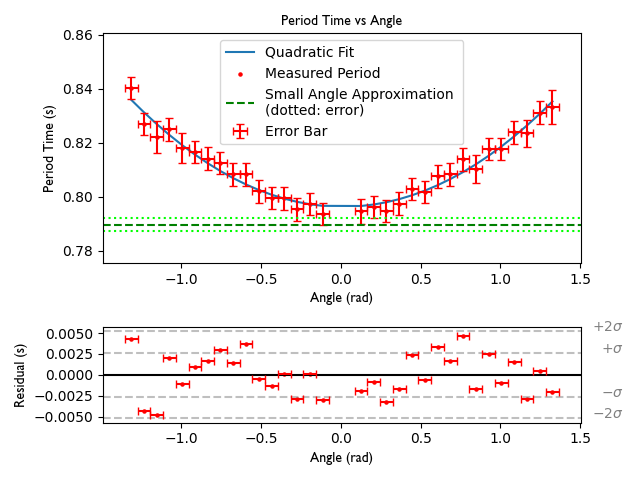
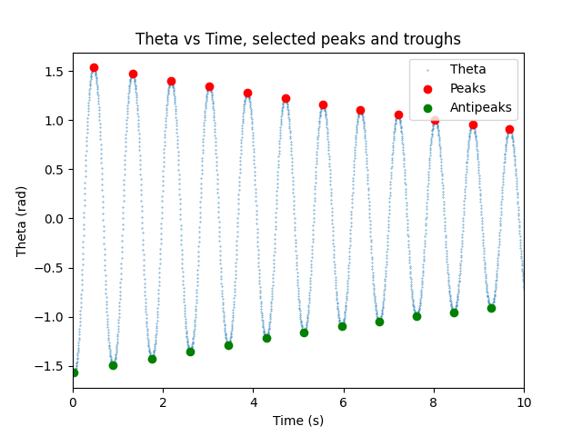

Acknowledgment
- Eric Xie — tracking optimizations
- Andy Wen — debugging frame processing issues
Color detection (cosine similarity)
Instead of HSV thresholding, the bob is detected using cosine similarity in RGB space. For reference bob color $$C_r=(R_r,G_r,B_r)$$ and pixel color $$C_p=(R_p,G_p,B_p)$$:
$$S = \frac{C_r \cdot C_p}{\|C_r\| \|C_p\|}$$
Pixels above a threshold are treated as bob pixels; we compute the centroid $$ (x_c, y_c) $$ over the mask.
Pivot estimation (circle fitting)
The pivot $$(x_0,y_0)$$ is estimated as the center of the fitted circle along the arc:
$$ E^* = \arg\min_{x_0, y_0} \sum_{i} \left( (x_i - x_0)^2 + (y_i - y_0)^2 - R^2 \right)^2 $$
Demonstration
Demonstration of the pendulum tracking algorithm.
Selected graphs



Code
Analysis scripts (e.g., dataAnalysis.py, expoFit.py, periodTime.py) are in the repository.